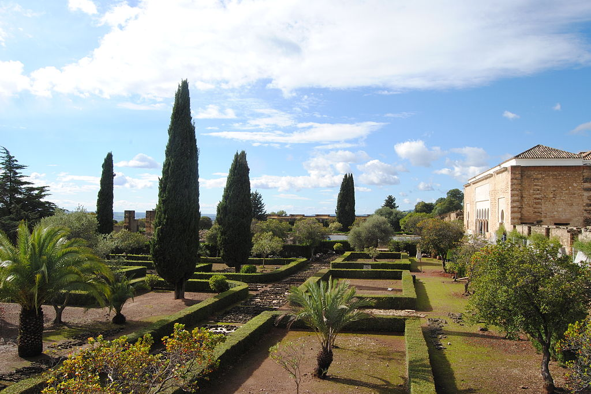

Medina Azahara
Medina Azahara, castellanización del nombre en árabe, مدينة الزهراء Madīnat al-Zahrā («la ciudad brillante»), fue
una ciudad palatina o áulica que mandó edificar el primer califa de Córdoba, Abderramán III, a unos 8 km en las
afueras de Córdoba en dirección noroeste, a los pies de Sierra Morena.
Los principales motivos de su construcción son de índole político-ideológica: la dignidad de califa exige la fundación
de una nueva ciudad, símbolo de su poder, a imitación de otros califatos orientales y sobre todo, para mostrar su
superioridad sobre sus grandes enemigos, el recién instaurado Califato fatimí de Ifriqiya, la zona norte del continente
africano. Además de oponentes políticos, lo eran también en lo religioso, ya que los fatimíes, chiíes, eran enemigos de
los omeyas, mayoritariamente de la rama islámica suní.
El yacimiento arqueológico de Medina Azahara está declarado Bien de interés cultural en la categoría de Monumento desde
el año 1923, además de ser declarada oficialmente como Patrimonio de la Humanidad de la Unesco el 1 de julio de 2018.
En 2019 recibió más de 285 672 visitantes, siendo uno de los espacios culturales más visitados de Andalucía, mientras
que en 2020, debido a las restricciones de movilidad ocasionadas por la pandemia de COVID-19, las visitas se redujeron
a 87 315 personas.

En el año 750 la dinastía de los Omeyas, que había gobernado el mundo islámico, fue derrocada del Califato de Damasco
por los abasíes. Abderramán I el Emigrado, siendo miembro superviviente de los Omeyas, huye a Al-Ándalus proclamando
el Emirato de Córdoba en 756 independiente de la nueva capital abasí, Bagdad. Sin embargo, Abderramán I nunca se
proclamó califa, acto que sí realizó uno de sus sucesores, el octavo emir, Abderramán III, en el año 929, después de acabar
con la inestabilidad política del emirato (principalmente la revuelta de Omar ben Hafsún), lo que conllevó el mayor esplendor
político, social y económico de la España musulmana, haciendo de la ciudad de Córdoba la más avanzada de Europa y el asombro
del mundo. La creación del Califato de Córdoba significó alzarse hasta el nivel de estado del Califato de Bagdad con todo lo
que ello conllevaba, tanto religioso como político. Además, su proclamación como califa también se explica debido a la reciente
creación del Califato fatimí en el norte de África unos años antes (909), quienes presentaban una amenaza para los intereses de
Córdoba. Antes de la creación de Medina Azahara, la residencia y centro del poder político de los emires omeyas se encontraba en
el Alcázar andalusí, en el corazón de Córdoba, frente a la Gran Mezquita aljama. Muchos eruditos destacan la motivación de la
nueva ciudad califal como un reflejo del nuevo estatus y grandeza de Abderramán III en torno a su califato. La creación de
estas ciudades palaciegas también tiene precedentes entre los califas abasíes y fatimíes que se construyeron este tipo de
urbes para sí mismos.Tras el intento fallido de levantar al-Madina, en el año 936 manda construir la fastuosa Medina
Azahara junto a la capital, Córdoba. Surgida de la nada, la ciudad regia concentra todo el poder político del califato.
Aunque el origen de la ciudad no carece de elementos legendarios, se sabe que la construcción comenzó a finales del 936 y se
continuó durante los cuarenta siguientes, alcanzando los tiempos de su hijo y sucesor en el califato, al-Hakam II. El historiador
del siglo xvi al-Maqqari nombra a Maslama ibn 'Abdallah como el alarife de la ciudad, aunque no está claro cómo de relevante fue
su papel o qué porcentaje de planos diseñó. Los edificios de mayor calibre no comenzaron a construir hasta 940, y la evidencia
sugiere a que se realizó por fases, con todo el proyecto general modificándose mientras que se ejecutaban los trabajos. La mezquita
aljama fue consagrada en 941, mientras que en 945 se trasladó la corte a la ciudad y un año más tarde se pavimentó el camino entre
la nueva ciudad y Córdoba. Finalmente, en 947 se trasladó el aparato de estado desde Córdoba, incluyendo la ceca o casa de la moneda
(dar al-sikka). No obstante, la construcción de la ciudad continuó durante todo el reinado de Abderramán III, hasta 961, e incluso
parte del reinado de su hijo Al-Hakam II (961-76). Asimismo, también participaron en los proyectos constructivos algunos oficiales
de alto rango. La ciudad se encontraba rodeada completamente de una muralla aprovisionada de torres.

Sin embargo, hay evidencias
de que únicamente los palacios estaban protegidos por una muralla al comienzo y que la muralla perimetral de la ciudad fue añadida tras
la llegada de habitantes fuera del área aúlica. Abderramán III también ordenó obtener o importar antiguas columnas de mármol de otros
lugares, para ser utilizadas como material de acarreo. Asimismo, al-Hakam II trasladó antiguas estatuas y sarcófagos para decorar las
estancias. Algunas estructuras que se han excavado e identificado del yacimiento arqueológico fueron construidas sobre otras anteriores
que parecen pertenecer a una fase posterior a la construcción inicial de la ciudad. Las zonas conocidas actualmente como la Casa de Yafar
y la Casa de los Pilares están edificadas sobre dos o tres pequeñas estructuras que ocupaban los mismos espacios. Además de albergar un
tamaño más relevante, presentan características muy diferentes, como una planta semibasilical en la Casa de Yafar y un patio rodeado de
una galería porticada en la Casa de los Pilares. Antonio Vallejo Triano, quien ha dirigido trabajos arqueológicos en la zona entre 1985
y 2013, ha datado la Casa de los Pilares de la década de 950. Del mismo modo, se cree que el Salón basilical superior, también conocido
como dar al-yund («casa del ejército»), pertenece a esta cronología.14 La construcción del Salón Rico o Salón de recepciones de
Abderramán III ha sido datado entre los años 953 y 957 gracias a las inscripciones encontradas en su decoración.7 La supervisión de este
salón fue encomendada a Abdallah ibn Badr, el visir y oficial de alto rango del califa en aquella época. La decoración se ejecutó bajo
el control del eunuco del califa Shunaif, aunque se desconoce si estuvo involucrado en el diseño del Salón Rico.
Basado en las evidencias de estas construcciones, Vallejo Triano destaca que se hizo una remodelación significativa del complejo palaciego
en la década de 950. Este cambio produjo edificios más amplios y monumentales que hacían uso de pórticos, arcadas y otros diseños basilicales.
Estas estructuras a menudo se construían sobre otras previas y de carácter más modesto, por lo que eran diseñadas para aumentar la ostentación
del califa a través de la arquitectura de su ciudad. Vallejo Triano argumenta que este periodo también coincidiría con una reorganización estatal de Abderramán III en 955, evidenciada por fuentes históricas como Ibn Idhari.14 Asimismo, Abderramán se estaría informando de los ricos palacios y elaboradas ceremonias en la corte de la nueva capial fatimí, Mahdia, y la capital bizantina de Constantinopla. Por ejemplo, algunos de los emisarios de Abderramán al emperador bizantino traían esculturas doradas de bronce, fuentes de mármol decoradas con figuras animales y otros elementos decorativos arquitectónicos. Esta creciente preocupación por otras cortes imperiales y el anhelo de Abderramán de igualarse a ellas explica este incremento en la complejidad de las ceremonias y los protocolos de la corte del califa en esta época, a la que las fuentes históricas atribuyen gran importancia, junto a un incremento en la arquitectura de nuevos edificios.15
Vallejo Triano también aclara que la construcción de la Casa de Yafar se produjo de manera más tardía a la de la década de 950 debido a que
su decoración parece estar más avanzada. Esta hipótesis refuerza una anterior del arquitecto Félix Hernández Giménez que indicaba que esta
residencia fue construida para Yafar al-Siqlabi, hayib de al-Hakam II entre 961 y 971, a quien se debe su denominación. Asimismo, esta
sería la única gran estructura de Medina Azahara realizada durante el reinado de al-Hakam II.